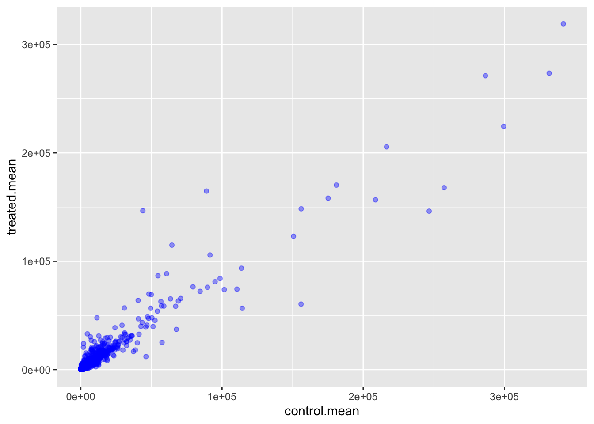
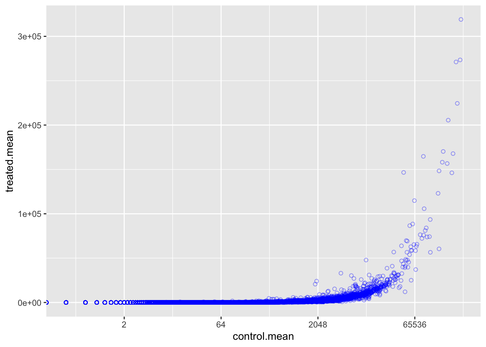
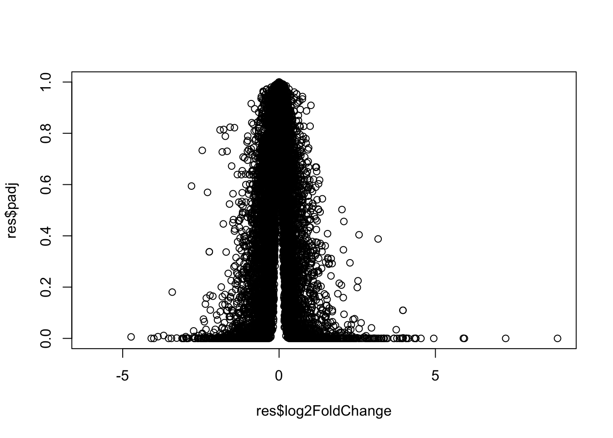
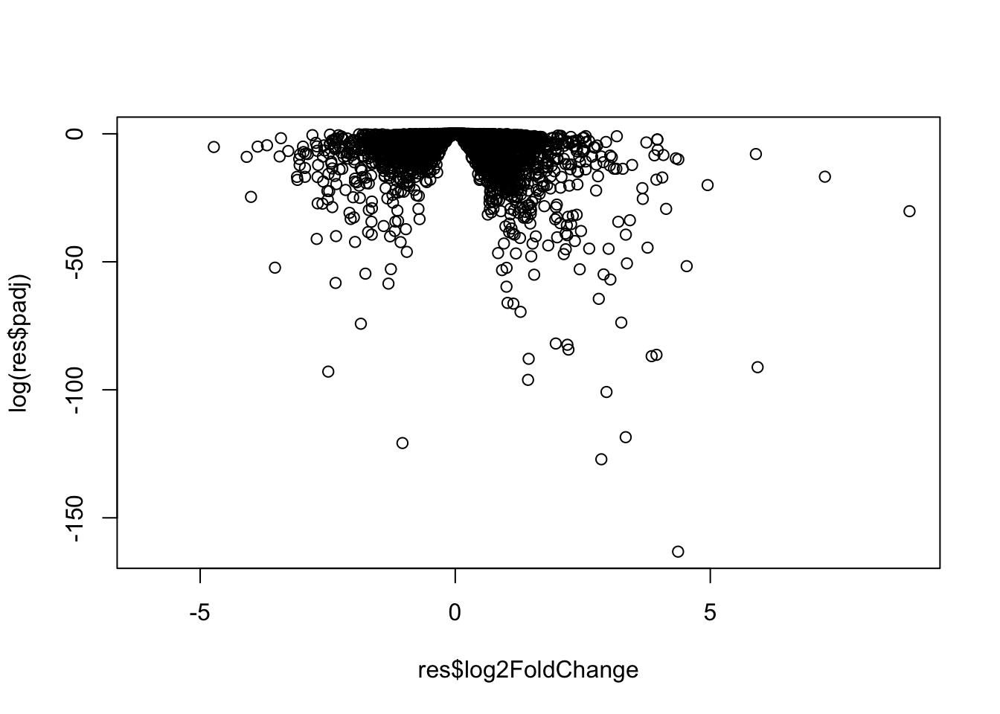
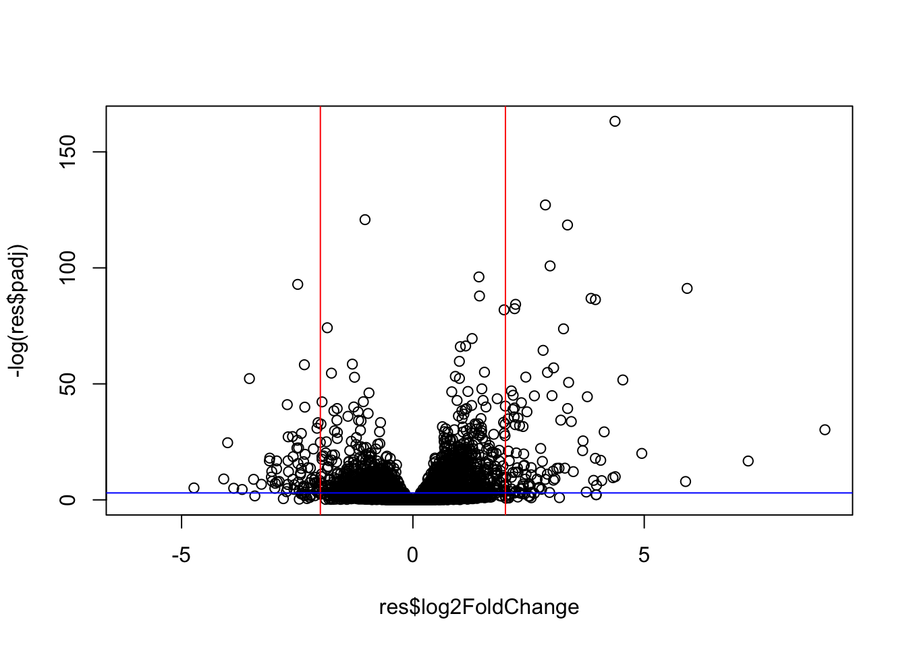
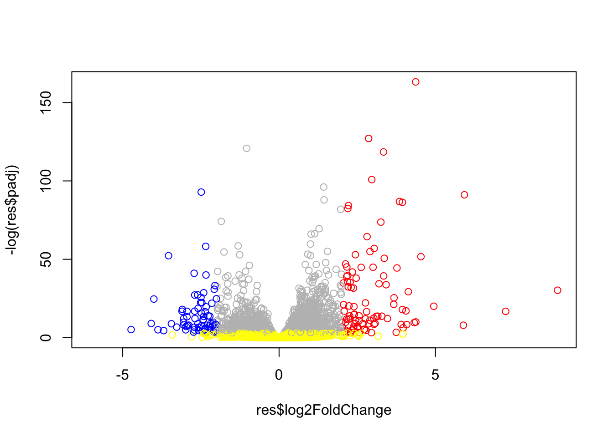
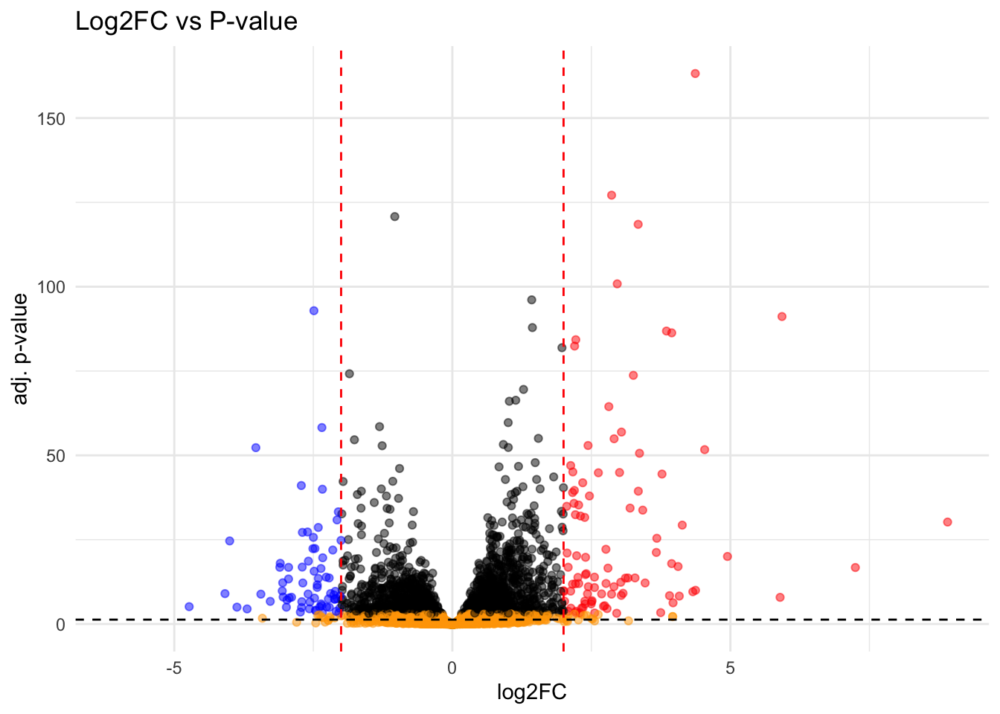

library(BiocManager)
library(DESeq2)lab13 - Transcriptomics and the analysis of RNA-Seq data
Background
The data for this hands-on session comes from a published RNA-seq experiment where airway smooth muscle cells were treated with dexamethasone, a synthetic glucocorticoid steroid with anti-inflammatory effects (Himes et al. 2014).
Himes et al. used RNA-seq to profile gene expression changes in four different ASM cell lines treated with dexamethasone glucocorticoid.They found a number of differentially expressed genes but focus much of the discussion on a gene called CRISPLD2.
This gene encodes a secreted protein known to be involved in lung development, and SNPs in this gene in previous GWAS studies are associated with inhaled corticosteroid resistance and bronchodilator response in asthma patients.
Biconductor setup
Intro
Today we will analyze some RNA sequencing data on the effects of a common steroid drug on airway cell lines.
There are two main inputs we need for this analysis.
countData: counts for genes in rows with experiments in the columnscolData: or metadata that tells us about the design of the experiment (i.e what is the columns ofcountData).
Importing count and colData
counts <- read.csv("airway_scaledcounts.csv", row.names=1)
metadata <- read.csv("airway_metadata.csv")head(counts) SRR1039508 SRR1039509 SRR1039512 SRR1039513 SRR1039516
ENSG00000000003 723 486 904 445 1170
ENSG00000000005 0 0 0 0 0
ENSG00000000419 467 523 616 371 582
ENSG00000000457 347 258 364 237 318
ENSG00000000460 96 81 73 66 118
ENSG00000000938 0 0 1 0 2
SRR1039517 SRR1039520 SRR1039521
ENSG00000000003 1097 806 604
ENSG00000000005 0 0 0
ENSG00000000419 781 417 509
ENSG00000000457 447 330 324
ENSG00000000460 94 102 74
ENSG00000000938 0 0 0head(metadata) id dex celltype geo_id
1 SRR1039508 control N61311 GSM1275862
2 SRR1039509 treated N61311 GSM1275863
3 SRR1039512 control N052611 GSM1275866
4 SRR1039513 treated N052611 GSM1275867
5 SRR1039516 control N080611 GSM1275870
6 SRR1039517 treated N080611 GSM1275871Q1. How many genes are there in this dataset?
nrow(counts)[1] 38694nrow(metadata)[1] 8Q2. How many control cell lines do we have?
table(metadata$dex)
control treated
4 4 sum(metadata$dex == "control")[1] 4Toy differnetial gene Expression
Let’s try fidning the average or mean of the “control” and “treated” columns and see if they differ.
- First we need to find all the “control” columns
- Extract just the “control” values for each gene
- Calculate the
mean()for each gene “control” values
all(colnames(counts) == metadata$id)[1] TRUEThe $dex column tells me whether we have “control” or “treated”.
control.inds <- metadata$dex == "control"Extract just the “control” values for all genes
control.counts <- counts[,control.inds]
head(control.counts) SRR1039508 SRR1039512 SRR1039516 SRR1039520
ENSG00000000003 723 904 1170 806
ENSG00000000005 0 0 0 0
ENSG00000000419 467 616 582 417
ENSG00000000457 347 364 318 330
ENSG00000000460 96 73 118 102
ENSG00000000938 0 1 2 0Calculate the mean value for each gene in the “control” columns
control.mean <- rowMeans(control.counts)
head(control.mean)ENSG00000000003 ENSG00000000005 ENSG00000000419 ENSG00000000457 ENSG00000000460
900.75 0.00 520.50 339.75 97.25
ENSG00000000938
0.75 Q3. Do the same for “treated to get a”treated.mean”
treated.inds <- metadata$dex == "treated"
treated.counts <- counts[,treated.inds]
treated.mean <- rowMeans(treated.counts)
head(treated.mean)ENSG00000000003 ENSG00000000005 ENSG00000000419 ENSG00000000457 ENSG00000000460
658.00 0.00 546.00 316.50 78.75
ENSG00000000938
0.00 Let’s store our mean values together in a data.frame
meancounts <- data.frame(control.mean, treated.mean)
head(meancounts) control.mean treated.mean
ENSG00000000003 900.75 658.00
ENSG00000000005 0.00 0.00
ENSG00000000419 520.50 546.00
ENSG00000000457 339.75 316.50
ENSG00000000460 97.25 78.75
ENSG00000000938 0.75 0.00Q4. Make a plot of
control.meanvstreated.mean
library(ggplot2)
plot1 <- ggplot(meancounts) +
aes(x = control.mean, y = treated.mean) +
geom_point(col = "blue", alpha = 0.4)
plot1
We totally need to log transform this data as it is os heavily skewed.
plot(meancounts, log = "xy")Warning in xy.coords(x, y, xlabel, ylabel, log): 15032 x values <= 0 omitted
from logarithmic plotWarning in xy.coords(x, y, xlabel, ylabel, log): 15281 y values <= 0 omitted
from logarithmic plot
Now scale it with ggplot
ggplot(meancounts) +
aes(x = control.mean, y = treated.mean) +
geom_point(col = "blue", alpha = 0.4, shape = 1) +
scale_x_continuous(trans = "log2")Warning in scale_x_continuous(trans = "log2"): log-2 transformation introduced
infinite values.
scale_y_continuous(trans = "log2")<ScaleContinuousPosition>
Range:
Limits: 0 -- 1let’s look at some basic logs:
#TREATED/CONTROL
log2(20/20)[1] 0#doubling the amount
log2(40/20)[1] 1#half the amount
log2(10/20)[1] -1A common “rule-of-thumb” is to focus on the genes with a log2 “fold-change” of +2 as so called UP REGULATED and -2 as DOWN REGUALTED.
Let’s add a log2 fold-change value to our meancounts data.frame
meancounts$log2fc <- log2(meancounts$treated.mean/meancounts$control.mean)
head(meancounts) control.mean treated.mean log2fc
ENSG00000000003 900.75 658.00 -0.45303916
ENSG00000000005 0.00 0.00 NaN
ENSG00000000419 520.50 546.00 0.06900279
ENSG00000000457 339.75 316.50 -0.10226805
ENSG00000000460 97.25 78.75 -0.30441833
ENSG00000000938 0.75 0.00 -InfThe NaN and -Inf values will create problems and cause errors. We need to exlcude the genes with NaN and -Inf values.
Q5. Remove any “zero count” genes from our dataset for further analysis
zero.vals <- which(meancounts[,1:2]==0, arr.ind=TRUE)
to.rm <- unique(zero.vals[,1])
mycounts <- meancounts[-to.rm,]
head(mycounts) control.mean treated.mean log2fc
ENSG00000000003 900.75 658.00 -0.45303916
ENSG00000000419 520.50 546.00 0.06900279
ENSG00000000457 339.75 316.50 -0.10226805
ENSG00000000460 97.25 78.75 -0.30441833
ENSG00000000971 5219.00 6687.50 0.35769358
ENSG00000001036 2327.00 1785.75 -0.38194109Alternative way
to.keep <- rowSums(meancounts[,1:2] == 0 ) == 0
sum(to.keep)[1] 21817head(to.keep)ENSG00000000003 ENSG00000000005 ENSG00000000419 ENSG00000000457 ENSG00000000460
TRUE FALSE TRUE TRUE TRUE
ENSG00000000938
FALSE mycounts <- meancounts[to.keep,]
head(mycounts) control.mean treated.mean log2fc
ENSG00000000003 900.75 658.00 -0.45303916
ENSG00000000419 520.50 546.00 0.06900279
ENSG00000000457 339.75 316.50 -0.10226805
ENSG00000000460 97.25 78.75 -0.30441833
ENSG00000000971 5219.00 6687.50 0.35769358
ENSG00000001036 2327.00 1785.75 -0.38194109Q6. How many genes are “up” regulated at log2fc threshold of +2
sum(mycounts$log2fc >= 2)[1] 314Q7. How many genes are “down” regulated at log2fc threshold of -2
sum(mycounts$log2fc <= -2)[1] 485note: PAUSE, we are missing the stats.
DESeq2 Analysis
Let’s do this properly and consider the stats - are the differences in the means significant?
We will use DESeq2 to do this
library(DESeq2)The first function we will use from this package sets up the input in the particular format that DESeq wants.
dds <- DESeqDataSetFromMatrix(countData=counts,
colData=metadata,
design=~dex)converting counts to integer modeWarning in DESeqDataSet(se, design = design, ignoreRank): some variables in
design formula are characters, converting to factorsddsclass: DESeqDataSet
dim: 38694 8
metadata(1): version
assays(1): counts
rownames(38694): ENSG00000000003 ENSG00000000005 ... ENSG00000283120
ENSG00000283123
rowData names(0):
colnames(8): SRR1039508 SRR1039509 ... SRR1039520 SRR1039521
colData names(4): id dex celltype geo_idWe can now run our DESeq analysis
dds <- DESeq(dds)estimating size factorsestimating dispersionsgene-wise dispersion estimatesmean-dispersion relationshipfinal dispersion estimatesfitting model and testingres <- results(dds)peak at results
head(res)log2 fold change (MLE): dex treated vs control
Wald test p-value: dex treated vs control
DataFrame with 6 rows and 6 columns
baseMean log2FoldChange lfcSE stat pvalue
<numeric> <numeric> <numeric> <numeric> <numeric>
ENSG00000000003 747.194195 -0.3507030 0.168246 -2.084470 0.0371175
ENSG00000000005 0.000000 NA NA NA NA
ENSG00000000419 520.134160 0.2061078 0.101059 2.039475 0.0414026
ENSG00000000457 322.664844 0.0245269 0.145145 0.168982 0.8658106
ENSG00000000460 87.682625 -0.1471420 0.257007 -0.572521 0.5669691
ENSG00000000938 0.319167 -1.7322890 3.493601 -0.495846 0.6200029
padj
<numeric>
ENSG00000000003 0.163035
ENSG00000000005 NA
ENSG00000000419 0.176032
ENSG00000000457 0.961694
ENSG00000000460 0.815849
ENSG00000000938 NAsummary(res)
out of 25258 with nonzero total read count
adjusted p-value < 0.1
LFC > 0 (up) : 1563, 6.2%
LFC < 0 (down) : 1188, 4.7%
outliers [1] : 142, 0.56%
low counts [2] : 9971, 39%
(mean count < 10)
[1] see 'cooksCutoff' argument of ?results
[2] see 'independentFiltering' argument of ?resultsResult Figure: Volcano Plots
Plot of the Log2FC vs P-value
plot(res$log2FoldChange, res$padj)
This P-value data is again heavily skewed so lets log transform it.
plot(res$log2FoldChange, log(res$padj))
We can flip the y-axis by adding a minus sign. This will make it easier to interpert
plot(res$log2FoldChange, -log(res$padj))
abline(v = -2, col = "red")
abline(v = 2, col = "red")
abline(h = -log(0.05), col = "blue")
Let’s add some color.
mycols <- rep("gray", nrow(res))
mycols[res$log2FoldChange <= -2] <- "blue"
mycols[res$log2FoldChange >= 2] <- "red"
mycols[res$padj >= 0.05] <- "yellow"
plot(res$log2FoldChange, -log(res$padj), col = mycols)
Q8. Make the same plot as above using
ggplot.
Let’s plot with ggplot
mycols <- rep("black", nrow(res))
mycols[res$log2FoldChange <= -2] <- "blue"
mycols[res$log2FoldChange >= 2] <- "red"
mycols[res$padj >= 0.05] <- "orange"
ggplot(as.data.frame(res)) +
aes(x = res$log2FoldChange, y = -log(res$padj)) +
geom_point(col = mycols, alpha = 0.5) +
geom_vline(xintercept = c(-2, 2), linetype = "dashed", color = "red") +
geom_hline(yintercept = -log10(0.05), linetype = "dashed", color = "black") +
theme_minimal() +
labs(x = "log2FC", y = "adj. p-value", title = "Log2FC vs P-value")Warning: Removed 23549 rows containing missing values or values outside the scale range
(`geom_point()`).
We need to add gene annotation
We first need to add Gene symbols (e.g HBB) so we know what genes we are dealing with. We need to translate between ENSEMBLE ids that we have in the rownames of res
head(rownames(res))[1] "ENSG00000000003" "ENSG00000000005" "ENSG00000000419" "ENSG00000000457"
[5] "ENSG00000000460" "ENSG00000000938"Install from bioconductor with BiocManager::install("AnnotationDbi")
library("AnnotationDbi")
library("org.Hs.eg.db")columns(org.Hs.eg.db) [1] "ACCNUM" "ALIAS" "ENSEMBL" "ENSEMBLPROT" "ENSEMBLTRANS"
[6] "ENTREZID" "ENZYME" "EVIDENCE" "EVIDENCEALL" "GENENAME"
[11] "GENETYPE" "GO" "GOALL" "IPI" "MAP"
[16] "OMIM" "ONTOLOGY" "ONTOLOGYALL" "PATH" "PFAM"
[21] "PMID" "PROSITE" "REFSEQ" "SYMBOL" "UCSCKG"
[26] "UNIPROT" Lets “map” between “ENSEMBL” and “SYMBOL” (i.e gene symbol)
res$symbol <- mapIds(org.Hs.eg.db,
keys=row.names(res), # Our genenames
keytype="ENSEMBL", # The format of our genenames
column="SYMBOL", # The new format we want to add
multiVals="first")'select()' returned 1:many mapping between keys and columnsAdd a few more ID mappings including “GENENAME” abd “ENTREZID”
res$entrez <- mapIds(org.Hs.eg.db,
keys=row.names(res), # Our genenames
keytype="ENSEMBL", # The format of our genenames
column="ENTREZID", # The new format we want to add
multiVals="first")'select()' returned 1:many mapping between keys and columnsres$genename <- mapIds(org.Hs.eg.db,
keys=row.names(res), # Our genenames
keytype="ENSEMBL", # The format of our genenames
column="GENENAME", # The new format we want to add
multiVals="first")'select()' returned 1:many mapping between keys and columnshead(res)log2 fold change (MLE): dex treated vs control
Wald test p-value: dex treated vs control
DataFrame with 6 rows and 9 columns
baseMean log2FoldChange lfcSE stat pvalue
<numeric> <numeric> <numeric> <numeric> <numeric>
ENSG00000000003 747.194195 -0.3507030 0.168246 -2.084470 0.0371175
ENSG00000000005 0.000000 NA NA NA NA
ENSG00000000419 520.134160 0.2061078 0.101059 2.039475 0.0414026
ENSG00000000457 322.664844 0.0245269 0.145145 0.168982 0.8658106
ENSG00000000460 87.682625 -0.1471420 0.257007 -0.572521 0.5669691
ENSG00000000938 0.319167 -1.7322890 3.493601 -0.495846 0.6200029
padj symbol entrez genename
<numeric> <character> <character> <character>
ENSG00000000003 0.163035 TSPAN6 7105 tetraspanin 6
ENSG00000000005 NA TNMD 64102 tenomodulin
ENSG00000000419 0.176032 DPM1 8813 dolichyl-phosphate m..
ENSG00000000457 0.961694 SCYL3 57147 SCY1 like pseudokina..
ENSG00000000460 0.815849 FIRRM 55732 FIGNL1 interacting r..
ENSG00000000938 NA FGR 2268 FGR proto-oncogene, ..Be sure to save our annotated results to a file.
write.csv(res, file = "annotated_results.csv")Pathway Analysis
Install the packages we need for pathway analysis: Run it in R console NOT quarto doc. BiocManager::install( c("pathview", "gage", "gageData") )
library(pathview)
library(gage)
library(gageData)Let’s peak at the gageData
data(kegg.sets.hs)
head(kegg.sets.hs, 2)$`hsa00232 Caffeine metabolism`
[1] "10" "1544" "1548" "1549" "1553" "7498" "9"
$`hsa00983 Drug metabolism - other enzymes`
[1] "10" "1066" "10720" "10941" "151531" "1548" "1549" "1551"
[9] "1553" "1576" "1577" "1806" "1807" "1890" "221223" "2990"
[17] "3251" "3614" "3615" "3704" "51733" "54490" "54575" "54576"
[25] "54577" "54578" "54579" "54600" "54657" "54658" "54659" "54963"
[33] "574537" "64816" "7083" "7084" "7172" "7363" "7364" "7365"
[41] "7366" "7367" "7371" "7372" "7378" "7498" "79799" "83549"
[49] "8824" "8833" "9" "978" To run pathway analysis we will use the gage() function and it requires a wee “vector of importance”. We will use our log2FC results from our res object.
foldchanges = res$log2FoldChange
names(foldchanges) = res$entrez
head(foldchanges) 7105 64102 8813 57147 55732 2268
-0.35070302 NA 0.20610777 0.02452695 -0.14714205 -1.73228897 keggres = gage(foldchanges, gsets=kegg.sets.hs)What is in the returned keggres object
attributes(keggres)$names
[1] "greater" "less" "stats" head(keggres$less, 3) p.geomean stat.mean p.val
hsa05332 Graft-versus-host disease 0.0004250461 -3.473346 0.0004250461
hsa04940 Type I diabetes mellitus 0.0017820293 -3.002352 0.0017820293
hsa05310 Asthma 0.0020045888 -3.009050 0.0020045888
q.val set.size exp1
hsa05332 Graft-versus-host disease 0.09053483 40 0.0004250461
hsa04940 Type I diabetes mellitus 0.14232581 42 0.0017820293
hsa05310 Asthma 0.14232581 29 0.0020045888We can pass our foldchange vector (our results) with any of these highlighted pathway IDs to see how our genes overlap with the pathway
pathview(gene.data=foldchanges, pathway.id="hsa05310")'select()' returned 1:1 mapping between keys and columnsInfo: Working in directory /Users/karinacardenas/Desktop/BIMM 143/Lab13Info: Writing image file hsa05310.pathview.png